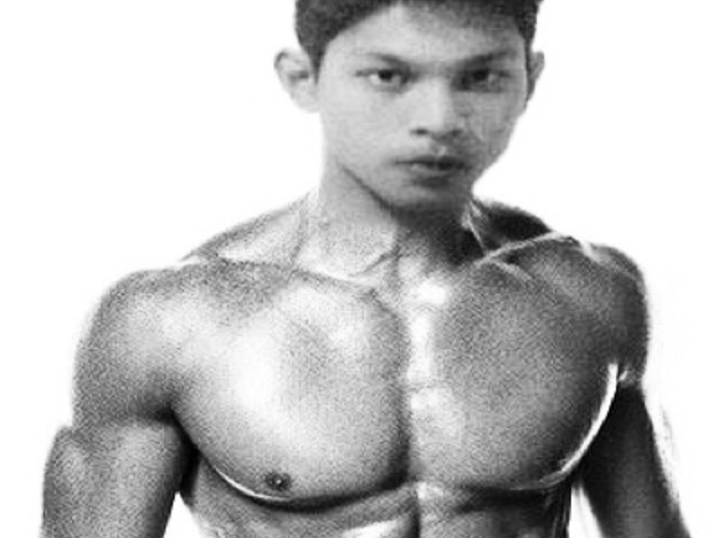
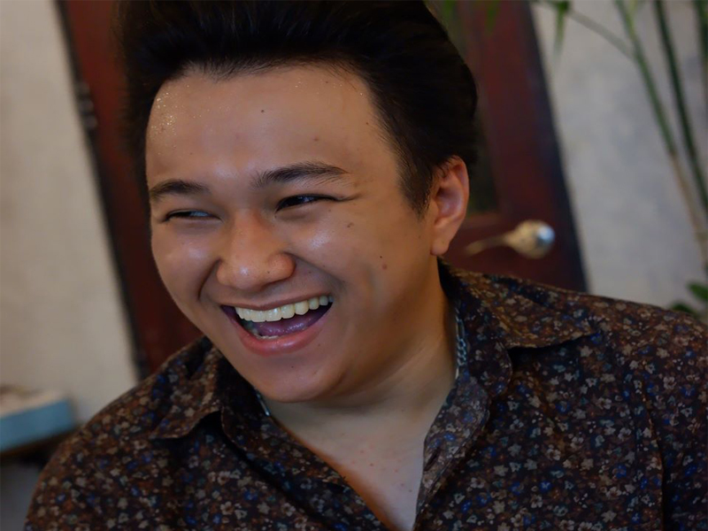

STAFFS

Saara Husskonsen-Station Manager
Ever since Saara was a girl she was always fascinated with radio broadcasting. This wasn’t a surprise as her father was the station manager of the Royal Radio in Sweden. Following her father’s footsteps, Saara manages the most coveted radio station today.

Zayd Wajeeh Hasalem-Master Broadcast Engineer
Zayd is a wiz when it comes to sound.
He can find solutions to any concern very much with any equipment available.
This is why Global Communications poached Zayd from a competitor station and made
him the master broadcast engineer of Hip Radio.
Yu Chiang-Booth Manager
Every DJ needs a booth manager to guide them through the glass wall.
Yu makes a very good manager owing to his vast and deep experience with
several stations prior to Hip Radio. His claim to fame is that his shows precisely
start and end on time. That is a claim not every booth manager can make.

Charles Duffield-Master Sound Specialist
Charles is a wonder when it comes to broadcast engineering.
He can tackle set-ups and dismantling in a jiffy.
His organized workflow makes him a stalwart contender in today’s fast-paced lifestyle.
Because of this, Charles is head of every event the station partakes of